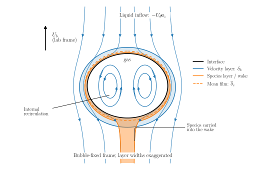
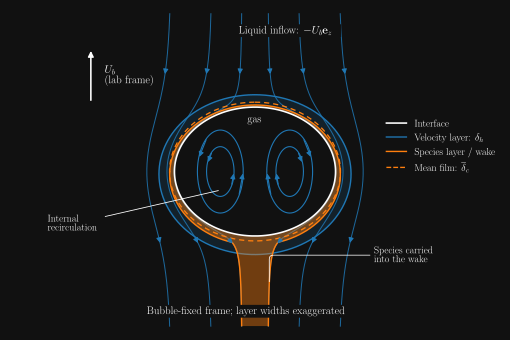
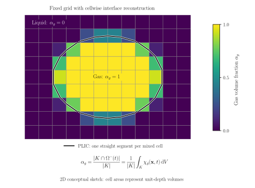
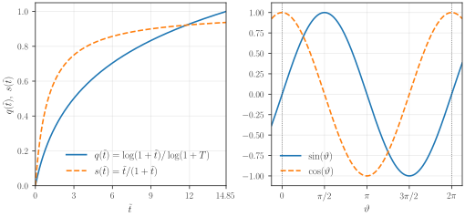
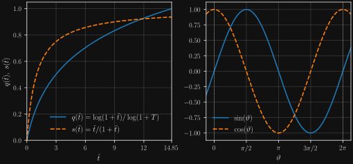

Surrogate models for continuous predictions
Lecture 5 — resolving concentration boundary layers
This work is licensed under a Creative Commons Attribution 4.0 International License.
Learning objectives
After this lecture, we should be able to:
- Explain why a high Schmidt number makes concentration boundary layers difficult to resolve.
- Compare volume-of-fluid and interface-tracking methods for transport near a bubble.
- Explain how a continuous surrogate couples bubble dynamics to a liquid-only transport calculation.
- Construct regression models that respect the initial conditions and angular symmetry.
The high Schmidt number problem
The complementary code notebook provides the worked implementation, and the exercise uses it to investigate other bubbles and the limits of the approximation.
This lecture continues our bubble-scale description of gas–liquid mass transfer. In the previous lecture, the surrogate predicted a discrete bubble regime. Here, we want to predict continuous quantities, such as a bubble’s rise velocity, shape, and interfacial velocity. These predictions will help us compute the transport of dissolved gas near the interface.
A thin layer controls the transfer
In the Taylor-bubble example from the previous lecture, the colored reaction product was most clearly visible in the wake. This does not mean that oxygen entered the liquid only at the rear of the bubble: dissolved gas can be transported along the interface inside a layer too thin to see easily. We now look more closely at that layer (Weiner et al. 2021).
We consider a mildly deformed bubble rising through otherwise quiescent liquid. In a reference frame translating with the bubble, its center stays fixed and liquid approaches from above. For a clean, mobile interface, tangential motion also drives circulation inside the gas. The upward arrow in the sketch indicates the bubble’s rise velocity in the laboratory frame; the external streamline arrows indicate the relative liquid motion.


Conceptual sketch, not a flow solution. The layer widths are exaggerated and do not reproduce the numerical ratios calculated below. The orange region follows the local concentration layer into the downstream wake between the inner streamlines; the dashed contour represents an effective mean concentration film. The drawn layer edges are not sharp physical boundaries. The actual concentration varies smoothly, and its local layer thickness changes along the interface.
The liquid-sided velocity boundary layer, with characteristic thickness \(\delta_h\), accommodates viscous adjustments to the surrounding flow. At a mobile gas–liquid interface, the tangential velocity can be nonzero. At a stationary no-slip wall, it is zero. Within the much thinner concentration boundary layer, the concentration changes from its interfacial value toward the bulk value.
Near the interface, molecular diffusion supplies dissolved gas in the normal direction, while the liquid flow carries it in the tangential direction. For a steady, thin-layer estimate, the leading balance can be written schematically as
\[ u_t\frac{\partial c}{\partial s} \sim D_l\frac{\partial^2 c}{\partial n^2}, \]
where \(s\) and \(n\) are tangential and normal coordinates, \(u_t\) is the tangential liquid velocity, and \(D_l\) is the molecular diffusivity. This balance explains why the local layer depends on both diffusion and the flow along the surface. Unsteadiness, interface deformation, and transport into the wake complicate the full problem; they are omitted from this scaling estimate.
Three dimensionless groups
We use the sphere-equivalent bubble diameter \(d_b\), the characteristic rise speed \(U_b\), and the liquid’s kinematic viscosity \(\nu_l\). The Reynolds number compares inertia with viscous forces:
\[ Re=\frac{U_b d_b}{\nu_l}. \]
The Schmidt number compares the molecular diffusivities of momentum and species:
\[ Sc=\frac{\nu_l}{D_l}. \]
A large \(Sc\) means that momentum diffuses much more rapidly than the dissolved species. The concentration can therefore vary on much shorter length scales than the velocity.
The Péclet number compares convective and diffusive species transport on the bubble scale:
\[ Pe=\frac{U_b d_b}{D_l}=Re\,Sc. \]
With lengths scaled by \(d_b\), velocities by \(U_b\), and time by \(d_b/U_b\), the passive-species equation takes the dimensionless form
\[ \frac{\partial c^*}{\partial t^*} +\mathbf{u}^*\cdot\nabla^*c^* =\frac{1}{Pe}\nabla^{*2}c^*. \]
When \(Pe\) is large, diffusion is weak on the bubble scale. It still controls transport across the interface, where the concentration gradients become very steep.
A one-millimeter bubble in water
For an order-of-magnitude example, we use the following approximate water–oxygen properties and rise speed:
| Quantity | Value |
|---|---|
| Bubble diameter \(d_b\) | \(1\,\mathrm{mm}=10^{-3}\,\mathrm{m}\) |
| Rise speed \(U_b\) | \(0.25\,\mathrm{m\,s^{-1}}=25\,\mathrm{cm\,s^{-1}}\) |
| Kinematic liquid viscosity \(\nu_l\) | \(10^{-6}\,\mathrm{m^2\,s^{-1}}\) |
| Dissolved-oxygen diffusivity \(D_l\) | \(2\times10^{-9}\,\mathrm{m^2\,s^{-1}}\) |
These are illustrative inputs, rather than a prediction of the terminal speed for every one-millimeter bubble. In particular, interfacial contamination can change the rise speed and surface mobility. With these inputs, we obtain
\[ Re=\frac{0.25\times10^{-3}}{10^{-6}}=250, \qquad Sc=\frac{10^{-6}}{2\times10^{-9}}=500, \]
and therefore
\[Pe=250\times500=1.25\times10^5\approx10^5.\]
From dimensionless groups to layer thicknesses
We use classical clean-bubble estimates to put physical dimensions on these numbers. The hydrodynamic thickness estimate quoted by Weiner and Bothe (2017), with reference to p. 441 of Levich (1962), is
\[ \frac{\delta_h}{d_b}\approx\frac{1}{\sqrt{2Re}}, \qquad \frac{d_b}{\delta_h}\approx\sqrt{2Re}. \]
For our example,
\[ \frac{d_b}{\delta_h}\approx\sqrt{500}\approx22.4, \qquad \delta_h\approx\frac{1\,\mathrm{mm}}{22.4} \approx44.7\,\mu\mathrm{m}. \]
The velocity layer is already more than twenty times thinner than the bubble diameter. To estimate the concentration layer, we introduce an effective mean film thickness \(\overline{\delta}_c\). In film theory, the mean liquid-side transfer coefficient is \(k_L=D_l/\overline{\delta}_c\), so the Sherwood number is \(Sh=k_Ld_b/D_l=d_b/\overline{\delta}_c\). The classical high-\(Pe\), clean-bubble estimate \(Sh\approx2\sqrt{Pe/\pi}\) then gives (Weiner and Bothe 2017)
\[ \frac{\overline{\delta}_c}{d_b} \approx\frac{\sqrt{\pi}}{2\sqrt{Pe}}, \qquad \frac{\overline{\delta}_c}{\delta_h} \approx\sqrt{\frac{\pi}{2Sc}}. \]
Equivalently, the velocity layer is thicker by a factor
\[ \frac{\delta_h}{\overline{\delta}_c} \approx\sqrt{\frac{2Sc}{\pi}} =\sqrt{\frac{1000}{\pi}}\approx17.8. \]
Thus,
\[ \overline{\delta}_c\approx\frac{44.7\,\mu\mathrm{m}}{17.8} \approx2.51\,\mu\mathrm{m}, \qquad \frac{d_b}{\overline{\delta}_c}\approx400. \]
This effective film reproduces a mean mass-transfer rate; it is not the arithmetic average of a sharply defined local layer edge. The dashed contour in the sketch represents this simplification. The estimates assume a clean, mobile interface and idealized flow; deformation, finite-\(Re\) corrections, surfactants, and reactions can alter the prefactors or the scaling. Here, their purpose is to explain the separation of scales.
Why numerical resolution becomes expensive
As a practical starting estimate, we ask for at least ten cells across the concentration boundary layer. Using the mean thickness above, the interface-normal cell width would need to satisfy approximately
\[ \Delta n\lesssim\frac{\overline{\delta}_c}{10} \approx0.25\,\mu\mathrm{m}, \qquad \frac{d_b}{\Delta n}\gtrsim4000. \]
The second number expresses an equivalent uniform resolution across one bubble diameter. It is not the total cell count of an adaptively refined or interface-aligned mesh. Moreover, ten cells is a planning rule, not a proof of accuracy: the thinnest local layers may require smaller cells, and mass-transfer rates must be checked by mesh refinement.
The sharp-interface flow model
Two domains and one moving interface
A common mathematical model describes the liquid and gas phases as separate time-dependent domains,
\[ \Omega^+(t)\quad\text{(liquid)}, \qquad \Omega^-(t)\quad\text{(gas)}, \]
with a common interface \(\Sigma(t)\). Throughout this lecture, the unit normal \(\mathbf{n}_\Sigma\) points from \(\Omega^-\) into \(\Omega^+\), hence from the gas into the liquid. This choice fixes the signs of all jump conditions below.


Conceptual sharp-interface model. Each phase has its own balance equations, and transmission conditions couple their one-sided values at the moving interface.
The word sharp means that the phase transition is represented by a surface of zero geometric thickness. In the model used here, we also assume that this surface carries no stored mass, so there is no separate interfacial mass inventory. These are distinct modeling choices: more general sharp-interface models can include adsorbed interfacial mass (Bothe 2022). A massless interface can nevertheless exert a surface-tension force.
We therefore have two sets of bulk balance equations, one in each domain, together with kinematic and dynamic coupling conditions on \(\Sigma(t)\). The sketch shows the incompressible mass and momentum balances, with \(\mathrm{D}/\mathrm{D}t\) denoting the material derivative and \(\mathbf{g}\) gravity. We focus below on the interface conditions that a second simulation must reproduce.
Slow dissolution and the normal velocity
The relevant separation of time scales is
\[ \tau_{\mathrm{BL}}\ll\tau_{\mathrm{size}}, \qquad \tau_{\mathrm{size}}\sim\frac{d_b}{|\mathrm{d}d_b/\mathrm{d}t|}, \]
where \(\tau_{\mathrm{BL}}\) characterizes development of the concentration boundary layer and \(\tau_{\mathrm{size}}\) characterizes the diameter change caused by dissolution. Over the time needed to establish the boundary layer, the bubble then loses only a small fraction of its volume. We can investigate different bubble sizes and Reynolds numbers separately, retaining species transfer while neglecting its feedback through shrinkage. Hydrodynamic deformation is still allowed; neglecting dissolution-induced volume change does not require a fixed shape.
To state the condition precisely, we denote the local interface velocity by \(\mathbf{u}_\Sigma\) and its normal component by \(V_\Sigma=\mathbf{u}_\Sigma\cdot\mathbf{n}_\Sigma\). The one-sided total mass fluxes per unit area, measured relative to that moving surface, are
\[ \dot m^\pm =\rho^\pm\left(\mathbf{u}^\pm-\mathbf{u}_\Sigma\right) \cdot\mathbf{n}_\Sigma. \]
Without interfacial mass accumulation, conservation gives
\[ \dot m^+-\dot m^-=0 \qquad\text{on }\Sigma(t). \]
Equal mass fluxes alone do not imply equal normal velocities when the densities differ. In our leading-order hydrodynamic approximation, we additionally neglect the total mass crossing the interface and set \(\dot m^+=\dot m^-=0\). Consequently,
\[ \mathbf{u}^+\cdot\mathbf{n}_\Sigma =\mathbf{u}^-\cdot\mathbf{n}_\Sigma =V_\Sigma. \]
The interface moves with the fluid in the normal direction. The much slower loss of gas is omitted from this hydrodynamic problem, while its dissolved concentration and transfer rate remain the quantities of interest in the species calculation. This is a one-way approximation, not an exact description of a shrinking bubble.
Tangential continuity is a closure assumption
We also assume that the two fluids do not slip tangentially relative to one another at the interface. With the tangential projector
\[ \mathbf{P}_\Sigma=\mathbf{I}-\mathbf{n}_\Sigma\otimes\mathbf{n}_\Sigma, \]
the condition reads
\[ \mathbf{P}_\Sigma\mathbf{u}^+ =\mathbf{P}_\Sigma\mathbf{u}^- \qquad\text{on }\Sigma(t). \]
This is an interfacial constitutive assumption, not a consequence of mass conservation. Combined with the normal-velocity condition, it gives continuity of the full velocity trace:
\[\mathbf{u}^+=\mathbf{u}^-\qquad\text{on }\Sigma(t).\]
Continuity does not mean that the tangential velocity is zero. Both phases can move along the interface, as in the recirculating bubble sketch. A shear-free approximation would concern the tangential traction, not the tangential velocity.
Momentum transmission and surface tension
Velocity continuity is accompanied by a force balance. We define the Newtonian Cauchy stress and our jump convention as
\[ \mathbf{T}^\pm=-p^\pm\mathbf{I} +\mu^\pm\left[\nabla\mathbf{u}^\pm+ \left(\nabla\mathbf{u}^\pm\right)^{\mathsf T}\right], \qquad [\![a]\!]=a^+ - a^-. \]
Here, \(\mu^\pm\) are the dynamic viscosities. For the massless interface with no total mass crossing it, the momentum transmission condition is
\[ [\![\mathbf{T}]\!]\mathbf{n}_\Sigma =\gamma\kappa\mathbf{n}_\Sigma-\nabla_\Sigma\gamma, \qquad \kappa=\nabla_\Sigma\cdot\mathbf{n}_\Sigma, \]
where \(\gamma\) is the surface tension and \(\nabla_\Sigma\) denotes the surface gradient. For a clean interface with constant \(\gamma\), the gradient term vanishes: the normal traction jump balances capillarity, and tangential traction is continuous. For varying surface tension, the tangential term represents Marangoni forcing.
Writing \(\boldsymbol{\tau}^\pm=\mathbf T^\pm+p^\pm\mathbf I\) for the viscous stress, we can project the jump onto the normal and tangent plane:
\[ p^- - p^+ + \mathbf n_\Sigma\cdot[\![\boldsymbol{\tau}]\!]\mathbf n_\Sigma =\gamma\kappa, \qquad \mathbf P_\Sigma[\![\boldsymbol{\tau}]\!]\mathbf n_\Sigma =-\nabla_\Sigma\gamma. \]
The normal equation relates the pressure values at the interface. Pressure drops out of the tangential equation, which governs the viscous shear jump. Neither projection specifies the liquid-side normal pressure derivative used in the liquid-only simulation.
A static spherical bubble checks the signs: our normal points outward, so \(\kappa=2/R\). With zero viscous stress, the condition gives the familiar pressure difference
\[p^- - p^+=\frac{2\gamma}{R}.\]
The gas pressure is larger even though velocity is continuous. In the hybrid simulation, the learned interface motion and surface velocity must therefore be compatible with a flow solution; prescribing only a bubble outline would leave essential coupling information out.
Two numerical representations of the interface
The sharp-interface model describes the physics. We still need a numerical representation of its moving domains. Two useful choices make the motivation for our hybrid approach clearer.
Volume of fluid: the interface cuts through bulk cells
In the volume-of-fluid (VOF) representation, we first define a gas-phase indicator (Hirt and Nichols 1981):
\[ \chi_g(\mathbf{x},t)= \begin{cases} 1,&\mathbf{x}\in\Omega^-(t),\\ 0,&\mathbf{x}\in\Omega^+(t). \end{cases} \]
The value directly on the zero-thickness interface does not affect a volume integral. For a computational cell \(K\), the stored gas volume fraction is the cell average of this indicator:
\[ \alpha_{g,K}(t) =\frac{1}{|K|}\int_K\chi_g(\mathbf{x},t)\,\mathrm{d}V =\frac{|K\cap\Omega^-(t)|}{|K|}. \]
Pure liquid cells have \(\alpha_{g,K}=0\), pure gas cells have \(\alpha_{g,K}=1\), and cut cells have \(0<\alpha_{g,K}<1\). The intermediate value describes how much gas occupies a cell; it is not a locally mixed physical phase.


Conceptual two-dimensional geometric VOF representation. Color indicates the gas volume fraction; the segments reconstruct an interface inside cut cells. In this planar illustration, area fractions play the role of volume fractions.
The interface is represented implicitly by the collection of volume fractions. A geometric reconstruction additionally estimates its orientation and places a line segment in each cut cell so that the reconstructed gas area matches the stored fraction. In three dimensions, a plane replaces that line. This is the idea of piecewise linear interface calculation (PLIC). A fraction alone does not uniquely determine a segment: neighboring data and a normal-estimation procedure are needed (Roenby et al. 2016).
VOF is attractive for robust, comparatively efficient simulations of moving and strongly deforming interfaces on bulk meshes. It also accommodates topology changes without maintaining a fitted boundary mesh. For our transport problem, however, the cell faces generally do not follow the interface. Accurately resolving a steep concentration gradient normal to that interface, and advecting the thin layer along it, can therefore demand substantial local refinement or a subgrid model.
This is a limitation of the mesh–interface relationship and transport discretization, rather than a statement that all VOF schemes have poor accuracy. Geometric reconstruction and advection can be highly accurate; a coarse PLIC description alone does not resolve a micrometer-scale concentration layer.
Interface tracking: the mesh follows the phase boundary
Here, interface tracking means an interface-fitted moving-mesh approach. The liquid and gas occupy separate mesh regions, and their shared boundary explicitly represents \(\Sigma(t)\). Mesh faces on that boundary move with the interface; interior points move to maintain mesh quality (Tuković and Jasak 2012).


Conceptual interface-fitted mesh. The shared boundary is an actual mesh boundary, and liquid cells can be thin in the normal direction while remaining longer along the surface. The drawing is not a convergence-tested simulation mesh.
This representation is especially useful for an isolated bubble with moderate deformation. Transmission conditions can be applied directly at boundary faces, and interface-aligned cell layers give precise control over the normal resolution needed for mass transfer. It is therefore well suited to high-accuracy interfacial transport calculations.
The cost is additional geometric and algorithmic work: mesh motion, iterative phase coupling, and possibly remeshing. Large deformations can degrade cells and threaten robustness; breakup and coalescence are much harder to accommodate than in VOF. Its accuracy and runtime still depend on the implementation and mesh, rather than on the method name alone.
Why combine these ideas?
| Representation | Useful feature for this lecture | Main difficulty for this lecture |
|---|---|---|
| VOF on a bulk mesh | Efficient, robust generation of bubble motion and deformation data | Very thin interfacial concentration layers need extra resolution or modeling |
| Interface-fitted moving mesh | Direct boundary conditions and concentrated interface-normal resolution | Maintaining two moving, coupled phase meshes adds complexity |
We would like to retain the practical two-phase flow calculation while exploiting an interface-aligned liquid mesh for the expensive species problem. The continuous surrogate models connect those two representations.
A simplified simulation approach
We now combine the practical strengths of the two representations: VOF provides the bubble dynamics, while a surface-aligned liquid mesh provides the resolution for species transport. The information passed between them consists of continuous functions learned from the first simulation. The strategy follows Section 2.3 of Weiner et al. (2022). In this lecture, the first-stage data come from VOF; the reference study used a front-tracking solver for that stage.
Four steps from two-phase flow to resolved species transport


Conceptual workflow. The regression curves and concentration wake are illustrative.
At each saved VOF time, we obtain the rise speed from the bubble-center history and sample positions and liquid velocities on the reconstructed interface. In the translating bubble frame, those samples give the radius \(r\) and the tangential velocity \(u_t\) as functions of polar angle. The fitted rise speed sets the inflow, while the fitted radius and tangential velocity set the moving boundary and its velocity. The liquid solver then computes the transient flow and species transport.
In the liquid-only case, the surrogate prescribes the moving interface and its velocity. OpenFOAM solves for the liquid kinematic pressure \(p/\rho^+\) with a homogeneous Neumann condition at the bubble, \(\partial_{n_\Sigma}(p/\rho^+)=0\), and a pressure reference at the outlet. This extrapolates the liquid pressure to the bubble with zero normal slope, while allowing it to vary along the surface. The normal component of the liquid momentum equation can give a nonzero pressure gradient when acceleration, viscosity, or body forces contribute. Even quasi-steady tangential flow can have normal acceleration as it follows the curved surface.
Parameterizing an axisymmetric bubble
We assume a straight rise path, azimuthal symmetry of shape and flow, and no azimuthal swirl. The calculation is performed in a meridional section, but represents a three-dimensional body of revolution. It is therefore an axisymmetric simulation, rather than a planar two-dimensional bubble.
The polar angle \(\vartheta\in[0,\pi]\) is measured from the upward rise axis: \(\vartheta=0\) is the front pole and \(\vartheta=\pi\) is the rear pole. The azimuthal angle is \(\varphi\), and \(\mathbf{e}_r(\vartheta,\varphi)\) is the radial unit vector. Relative to the bubble center \(\mathbf{x}_b(t)\), we parameterize the surface by
\[ \mathbf{x}_\Sigma(t,\vartheta,\varphi) =\mathbf{x}_b(t)+r(t,\vartheta)\mathbf{e}_r(\vartheta,\varphi), \qquad \frac{\mathrm{d}\mathbf{x}_b}{\mathrm{d}t}=U_b(t)\mathbf{e}_z. \]
This radius representation requires a single surface intersection along each ray from the center. It is suitable for the mildly deformed bubbles considered here; it does not describe arbitrary overhanging or breaking interfaces.


Conceptual meridional geometry. The tangent points toward increasing polar angle, and the normal retains our gas-to-liquid orientation. Surface motion and fluid motion have the same normal component in the approximation used here; their tangential components need not coincide.
Which velocity do we learn?
We subtract the translational velocity of the bubble center from the laboratory-frame liquid velocity:
\[ \mathbf{u}^{\mathrm{rel}}\big|_\Sigma =\mathbf{u}^{\mathrm{lab}}\big|_\Sigma-U_b(t)\mathbf{e}_z. \]
With \(\mathbf{t}_\Sigma\) the unit tangent toward increasing \(\vartheta\), its two meridional components are
\[ u_t=\mathbf{u}^{\mathrm{rel}}\big|_\Sigma\cdot\mathbf{t}_\Sigma, \qquad u_n=\mathbf{u}^{\mathrm{rel}}\big|_\Sigma\cdot\mathbf{n}_\Sigma. \]
We learn \(u_t\) in the translating frame, rather than a laboratory-frame tangential component or the difference between fluid velocity and the full local mesh velocity. Translation and deformation are separate: after subtracting the rise speed, the bubble can still deform.
Interface positions provide the training data for \(r(t,\vartheta)\). They are generally easier to extract reliably than a small normal velocity obtained by projecting a reconstructed interfacial flow field. Differentiating the learned radius also ensures that the prescribed normal motion and boundary velocity refer to the same predicted surface.
Regression forms that enforce known structure
The networks \(f_U\), \(f_r\), and \(f_t\) use the normalized time \(q(t)\). We define \(q(t)\) and the startup factor \(s(t)\) using dimensionless time \(t\) and the last available snapshot time \(T\).
\[ q(t)=\frac{\log(1+t)}{\log(1+T)},\qquad s(t)=\frac{t}{1+t}. \]
The plot uses \(\tilde{t}\) for the same dimensionless time denoted by \(t\) in the equations. The reference dataset has \(T=14.85\). Both functions start at zero. The normalized time \(q(t)\) reaches one at the last snapshot, while \(s(t)\) rises quickly at startup and approaches one as time increases.


The predictions used in the worked example are
\[ \boxed{\widehat U_b(t)=S_U\,s(t)f_U\!\left(q(t)\right)} \]
\[ \boxed{\widehat r(t,\vartheta) =r_0+S_r\,s(t)^2f_r\!\left(q(t),\cos(\vartheta)\right)} \]
\[ \boxed{\widehat u_t(t,\vartheta) =S_t\,s(t)\sin(\vartheta)f_t\!\left(q(t),\cos(\vartheta)\right)}. \]
Here, \(r_0\) is the initial spherical radius. The output scales \(S_U\), \(S_r\), and \(S_t\) are determined from the training targets. The startup and angular factors enforce the following constraints.
- Initial rise speed: \(\widehat{U}_b(0)=0\) for a finite network output.
- Initial shape: \(\widehat{r}(0,\vartheta)=r_0\) at every angle. The squared startup factor also gives \(\partial_t\widehat r(0,\vartheta)=0\).
- Shape symmetry: because \(\cos(-\vartheta)=\cos(\vartheta)\), a full-meridian extension satisfies \(\widehat{r}(t,-\vartheta)=\widehat{r}(t,\vartheta)\). It is also \(2\pi\)-periodic. For a differentiable model, the angular radius derivative vanishes at both poles.
- Tangential antisymmetry and regularity: the sine factor gives \(\widehat{u}_t(t,-\vartheta)=-\widehat{u}_t(t,\vartheta)\) in the signed full-meridian extension. On the physical interval \([0,\pi]\), it makes the tangential velocity vanish at both poles. The time factor also gives \(\widehat{u}_t(0,\vartheta)=0\).
These are reflection symmetries about the rise axis. They do not force the front and rear of the bubble to have identical shapes or velocities: \(\cos(0)=1\) and \(\cos(\pi)=-1\) remain distinct network inputs.
A positive radius and constant bubble volume still require checks when fitting the shape.
We fit the constrained predictions directly to the observed quantities, avoiding division by the startup or sine factors where they vanish.
From the learned radius to mesh motion and normal velocity
We differentiate the radius at fixed polar angle, so \(z=\cos(\vartheta)\) is constant.
\[ \partial_t\widehat r = S_r\left[ 2s(t)s'(t)f_r\!\left(q(t),z\right) +s(t)^2q'(t)\,\partial_q f_r\!\left(q(t),z\right) \right]. \]
Here, \(s'(t)=1/(1+t)^2\) and \(q'(t)=1/[(1+t)\log(1+T)]\).
In bubble-fixed coordinates, a boundary point at fixed \((\vartheta,\varphi)\) moves radially with
\[ \mathbf{w}_\Sigma =\frac{\partial\widehat r}{\partial t}\mathbf{e}_r. \]
Its normal component determines the fluid’s normal boundary velocity. The prescribed liquid velocity is therefore
\[ \boxed{ \mathbf{u}^{\mathrm{rel}}\big|_\Sigma =\widehat{u}_t\mathbf{t}_\Sigma +\left(\frac{\partial\widehat r}{\partial t} \mathbf{e}_r\cdot\mathbf{n}_\Sigma\right)\mathbf{n}_\Sigma }. \]
The projection is important: on a deformed bubble, radial and normal directions generally differ. In particular, \(\partial_t\widehat r\) is not itself the signed normal speed. With \(\widehat r_\vartheta=\partial\widehat r/\partial\vartheta\), our gas-to-liquid normal satisfies
\[ \mathbf{n}_\Sigma =\frac{\widehat r\mathbf{e}_r-\widehat r_\vartheta\mathbf{e}_\vartheta} {\sqrt{\widehat r^2+\widehat r_\vartheta^2}}, \qquad \widehat{u}_n =\frac{\widehat r\,\partial_t\widehat r} {\sqrt{\widehat r^2+\widehat r_\vartheta^2}}. \]
The same predicted radius sets the displacement of an initially spherical boundary,
\[ \Delta\mathbf{x}_\Sigma =\left[\widehat r(t,\vartheta)-r_0\right]\mathbf{e}_r. \]
We can evaluate the time derivative analytically, by automatic differentiation, or consistently from successive predicted boundary positions. A time-discrete implementation uses the same boundary positions for mesh motion and its normal-velocity condition, so two independently fitted approximations cannot contradict one another. The mesh may move radially while the fluid moves tangentially along it; only their normal components must agree.
Inflow and transient species transport
The undisturbed liquid is at rest in the laboratory frame. It therefore enters the translating-frame calculation with the time-dependent velocity
\[ \boxed{\mathbf{u}_{\mathrm{in}}(t) =-\widehat U_b(t)\mathbf{e}_z}. \]
The inner boundary receives the displacement and velocity conditions above, and the liquid solver computes the flow throughout the remaining domain. If the frame accelerates, its acceleration must also be treated consistently in the momentum/pressure formulation; changing the inlet velocity alone does not specify a complete non-inertial formulation.
We then use that transient flow to compute the dissolved-species concentration, for example with a prescribed equilibrium concentration at the bubble boundary and a lower concentration in the incoming liquid. The fine, interface-aligned cells are used where the normal concentration gradient is steep. A moving-mesh solver accounts for mesh motion in its transport fluxes.
The result is a hybrid simulation, with the flow boundary data represented by regression models and the liquid flow and species fields still obtained from conservation equations. We preserve the time dependence of the original bubble dynamics while concentrating the spatial resolution on the liquid-side transport problem.
Computed deformation and concentration transport
The animations show OpenFOAM fields from the AOTInductor and LibTorch workflow. The three panels have the same bubble and velocity field at each time: only the diffusion coefficient changes, giving \(Sc=100\), \(1000\), and \(10000\). The Reynolds number varies during startup, with \(Re(t)=Ga\,\widehat U_b(t)\) and \(Ga=238.2\) in this dimensionless case.
Actual cell-associated concentration, on a common fixed scale from 0 to 1. This near-bubble meridional view is reflected by axisymmetry. The interface outline follows the moving mesh; the gas interior is excluded from the liquid calculation.
Actual mesh cells, with a close-up following the interface near a polar angle of \(45^\circ\). The local axes are tangential distance \(s\) and outward normal distance \(n\); the view translates and rotates, without stretching the geometry. Cell colors show \(Sc=1000\), with no cell-to-point smoothing.
The animations use 200 saved snapshots from \(0.05\leq\tilde t\leq10\) on a 13,584-cell mesh with 132 faces along the bubble and milder interface-normal grading. The mesh close-up shows that the steep concentration change at \(Sc=1000\) occupies only a few cells normal to the interface. The layer is thinner still at \(Sc=10000\). This limited resolution makes the interfacial gradient and Sherwood numbers sensitive to mesh spacing. A refinement study is needed to establish mesh convergence.